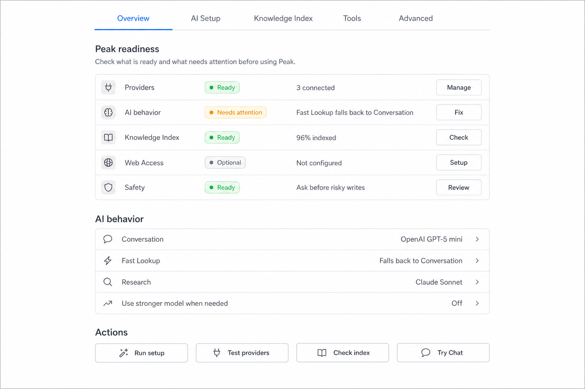
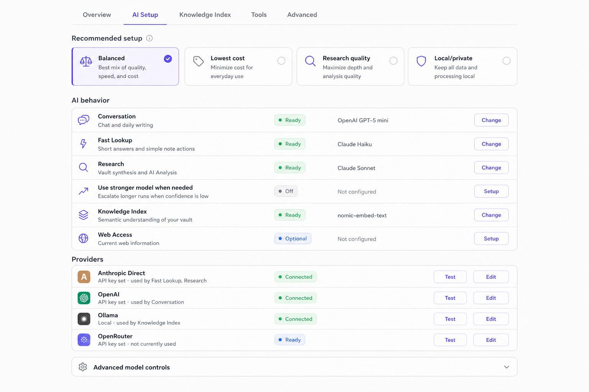
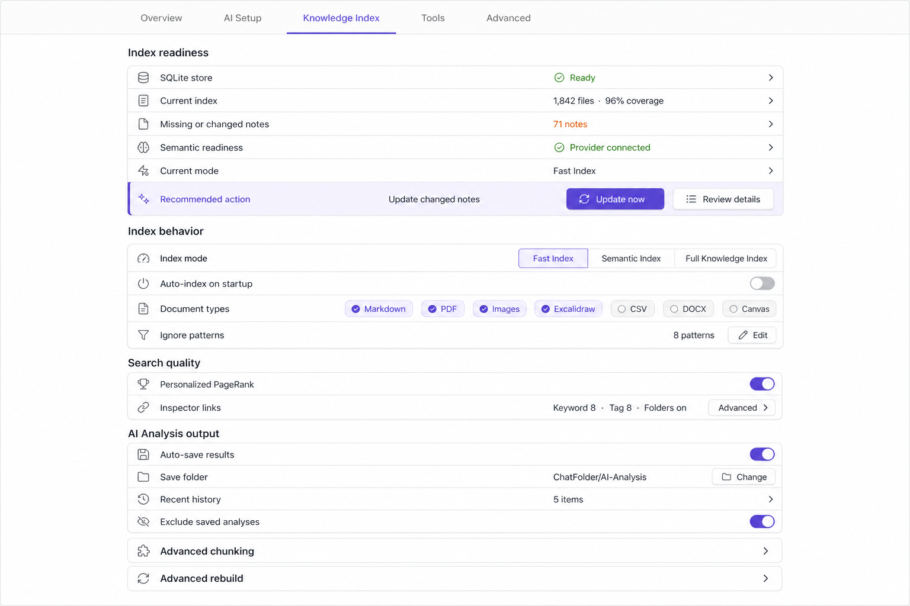
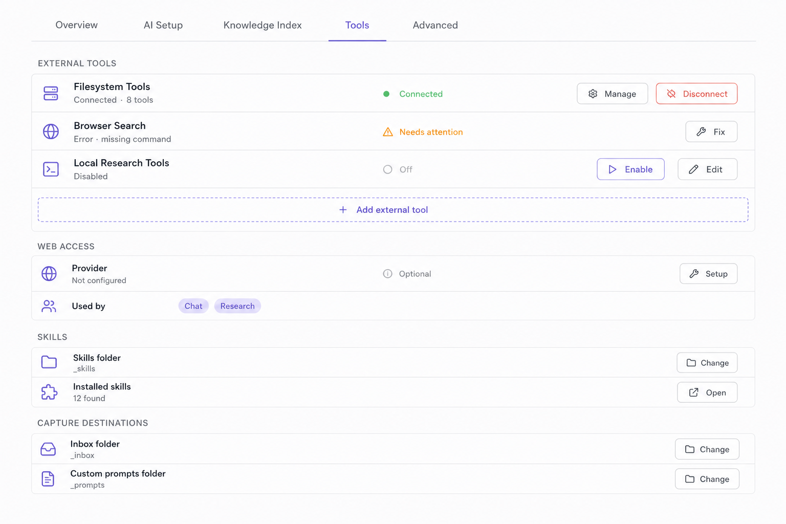
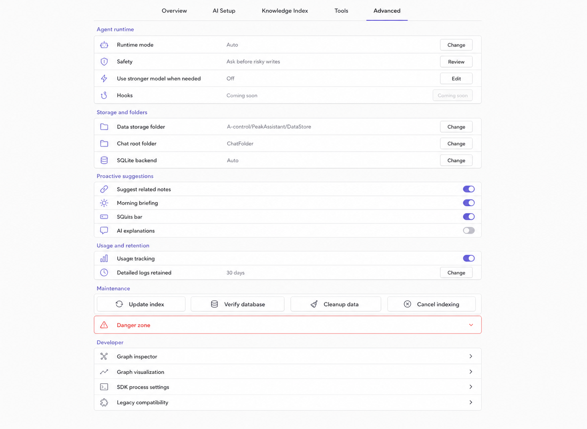

Check what is ready and what needs attention before using Peak.
Read-only summary. Change bindings in AI Setup.
Quick presets that adjust your AI bindings. You can still change individual roles below.
Each provider can power Conversation, Fast Lookup, Research, or Knowledge Index.
OpenAI-compatible endpoints. Use for LM Studio, LiteLLM, vLLM, or anything self-hosted.
Detected from your current vault and index state. Peak does not auto-rebuild.
Tool servers that extend Peak with vault, web, and system capabilities.
The engine that runs longer multi-step work. Most users can leave this on Auto.
Inline related notes and ambient briefings while you write. Fully optional.
Periodic upkeep tasks. Safe to run at any time.
Low-level controls. Most users should leave these alone.

Overview
AI Setup
Knowledge Index
Tools
Advanced